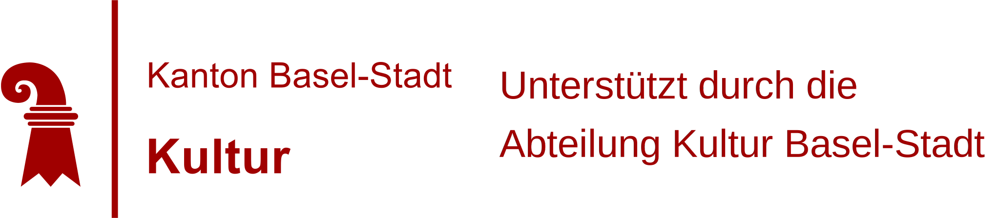

[nu] – new; [lux] – unit of illumination
Newluxx is a Studio
based in Basel, Switzerland.
We are focused on Fashion Research.
We strive for a transmedia and multisensory design practice.
Our practice covers product design, accessory design and experience design.
Our process is based on conceptual research, bodywork, form exploration and a fusion of analog and digital modelling. We are pursuing a poetic application of digital modelling into the design process and the presented items. Exploring hybrid....
Our main interest lays in material culture. We are focused on investigating the aura of “luxus”, reflecting on values and collective norms/standards that engage identified audiences.
Every project is an intervention in the process of producing meaning and exploring relevancy within a different context.
We want to contribute to cultural production with sensitive and innovative ‘output’ capable of stimulating the sphere of feelings and emotions while provoking questions and strong positive critical thinking.
CONTACT
info@nwlx.ch
INSTAGRAM@newluxx.ch
CURRENT EXHIBITION
INDUSTRIA BOTANICA
DEC 16 2021 – JAN 27 2021
Zabriskie Point – 1205 Genève
Body is Environment – Tools and Acts of Cultivation
Catch a glimpse of our state of research
breeding in the nwlx-incubator.
Zabriskie Point – Rond / point de Plainpalais
1205 Genève
Vernissage Dec 16; 6pm
DEC 16 2021 – JAN 27 2022
